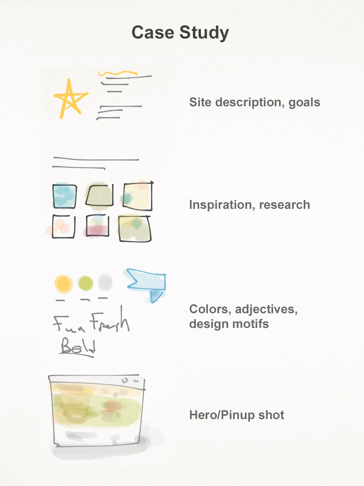

[< All Assignments](../../index.html)
# A13: Case Study
## Assignment Description
Create a case study document that shows off your site redesign. The case study is an updated version of the pitch. By documenting your process, the case study should help sell your site redesign to me and future clients. (Reminder: Final critique is next class, so also turn in your site)
<a class="lightbox" href="images/case-study.jpg"></a>
## Instructions
- Create at least 5 pages in your case study
- Cover page: Name of site
- Site description, goals: 2-4 paragraphs answering, “What problems did you solve in this redesign?”
- Inspiration, research: Screenshots, images, competition, etc.
- Colors (with codes!), adjectives, design motifs
- Hero/Pinup shot of home page: Make a pretty shot of your homepage. Can use a [template](http://www.elegantthemes.com/blog/freebie-of-the-week/free-macbook-pro-psd-templates)
- Save as an optimized pdf (<10mb)
- See examples: [Grace cathedral](https://www.dropbox.com/s/l6fdzg47h7rkruo/Case_Study_Grace_Cathedral.pdf?dl=0), [Conservatory of Flowers](https://www.dropbox.com/s/8aavcee56y4ftk9/Jessica_Folck_CaseStudy.pdf?dl=0)
## Requirement Checklist:
- Is there a case study uploaded? `https://{username}.github.io/web1/assignment-13`
- Check the case study
- Is the case case study a pdf format, less than 10mb?
- Are all 5 pages there? Cover, site description, inspiration, colors, pinup?
- Does the site description explain, "What problems were solved by this redesign?